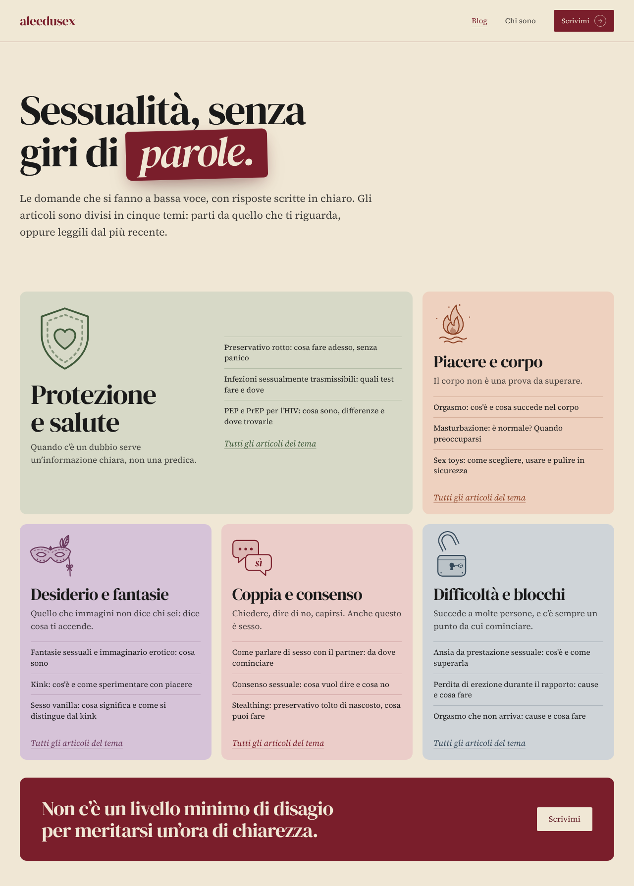
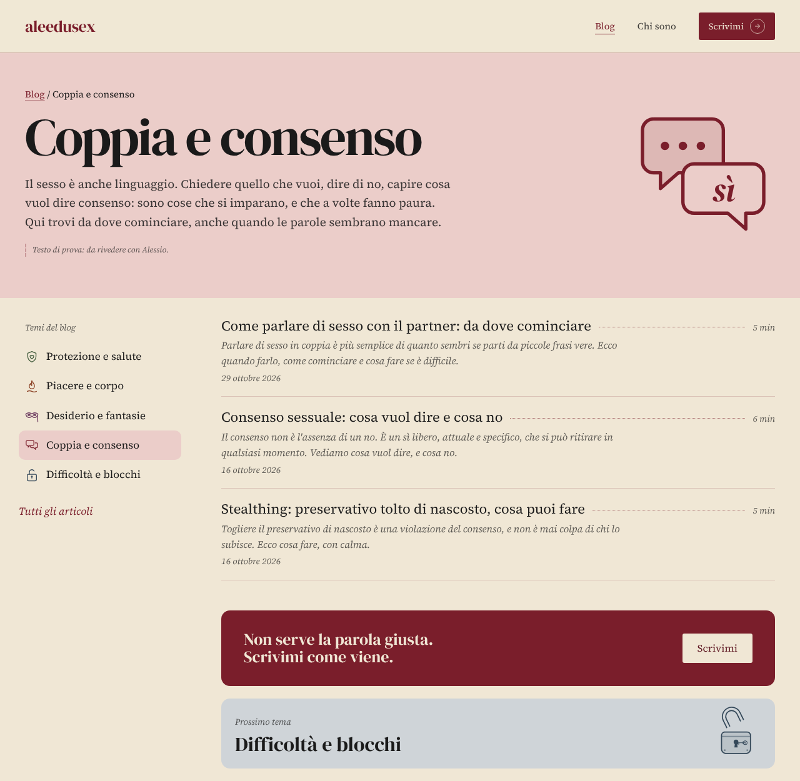
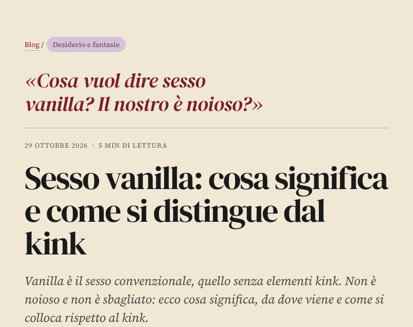
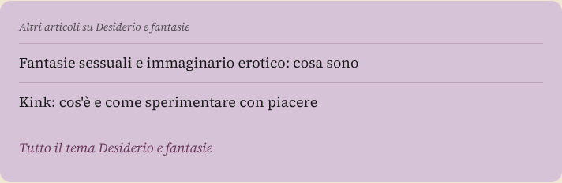
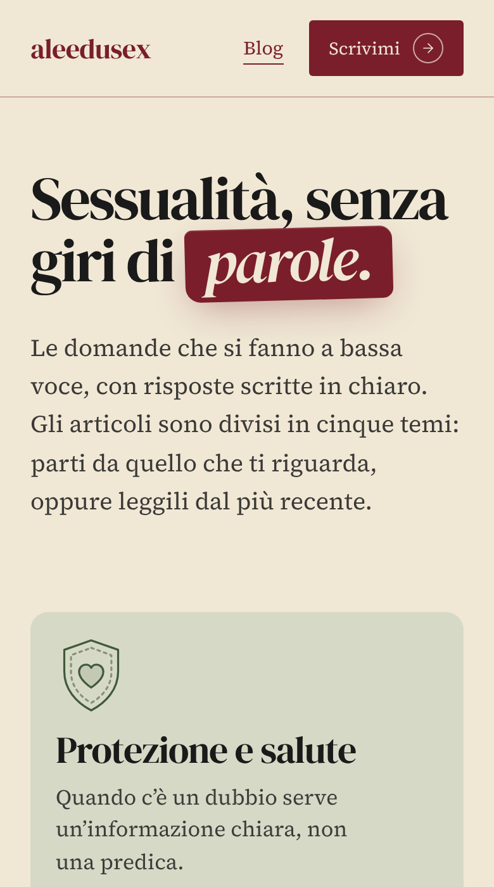
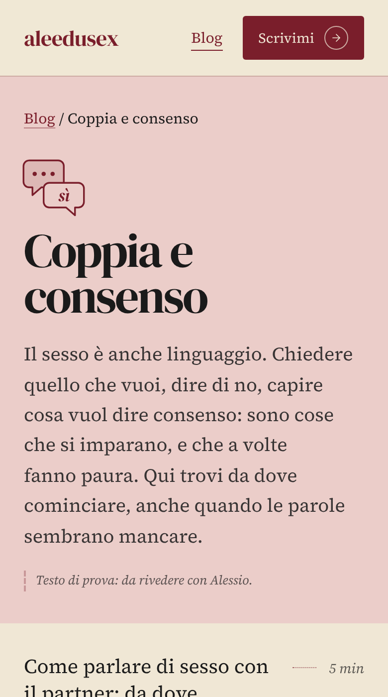
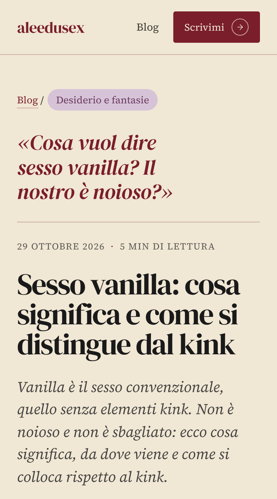
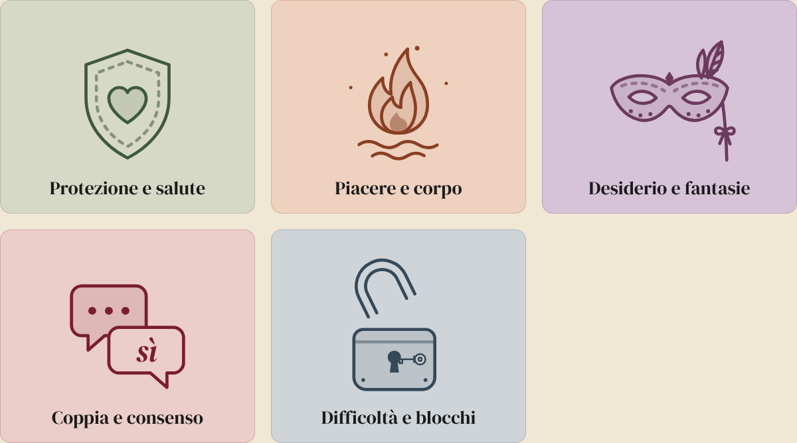

Cinque temi, ognuno con un colore e un disegno. In ogni riquadro tre articoli scelti e il link per vederli tutti. Sotto, l’elenco completo dal più recente: nessun articolo resta nascosto.

I disegni si tracciano da soli quando si apre la pagina, e si muovono quando ci passi sopra.
Ogni tema ha la sua pagina: due righe scritte da te e l’elenco degli articoli, come l’indice di un libro. In fondo, l’invito a scriverti.

Negli articoli, in alto, si vede a che tema appartengono; in fondo ci sono gli altri dello stesso tema.






È solo una prova: online non è cambiato niente.